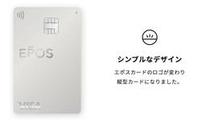
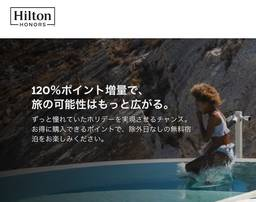
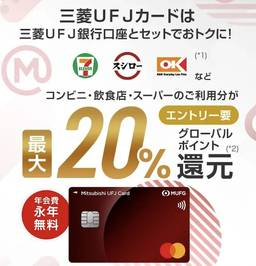
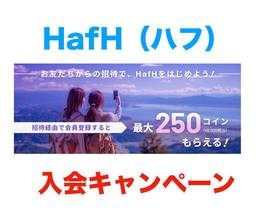

陸マイラー ピピノブのANAのマイルで旅ブログ
https://www.pipinobu.com
陸マイラーのピピノブが、飛行機に乗らずに貯めたマイルで世界中を旅するブログです。大量マイルの貯め方から、旅行記、ホテル宿泊記などをお届けしています。
フィード

エポスカードはポイントサイト経由の入会がお得！最大16,000円相当のポイント獲得！
陸マイラー ピピノブのANAのマイルで旅ブログ
エポスカードはポイントサイト経由の入会がお得！最大16,000円相当のポイント獲得！ エポスカード（EPOS CARD）の入会キャンペーンがお得です。最大で16,000円相当のポイントを獲得することができます。入会キャン ...
18時間前
三井住友カード ナンバーレス（NL）はポイントサイト経由の入会がお得！最大20,000円相当の高還元は期間限定！
陸マイラー ピピノブのANAのマイルで旅ブログ
三井住友カード ナンバーレス（NL）はポイントサイト経由の入会がお得 「三井住友カード ナンバーレス（NL）」は2021年2月1日にデビューした新しいクレジットカードです。その名前のとおりカード番号の記載がなくセキュリテ ...
2日前

ヒルトンのポイントセールは最大120％増量！ポイント単価とお得度、注意点は？＜2026年最新＞
陸マイラー ピピノブのANAのマイルで旅ブログ
ヒルトンではポイントセールを実施中です。セール期間中は最大120％増量となるため通常の半額以下でポイントを購入することができます。当記事では、ポイント単価とお得度とともに注意点も確認していきたいと思います。 更新履歴（2 ...
3日前

三菱UFJカードはポイントサイト経由の入会がお得！年会費無料で最大25,000円分の特典獲得！
陸マイラー ピピノブのANAのマイルで旅ブログ
三菱UFJカードはポイントサイト経由の入会がお得！年会費無料で最大25,000円分の特典獲得！ 三菱UFJカードを新規発行するならポイントサイト経由がお得です。ポイントサイト「モッピー」から15,000円分、公式サイトの ...
3日前
今週の「ANAトクたびマイル」はどこ？予約方法から注意点、メリット、デメリットを解説！
陸マイラー ピピノブのANAのマイルで旅ブログ
今週の「ANAトクたびマイル」はどこ？予約方法から注意点、メリット、デメリットを解説！ 「トクたびマイル」はANA国内線特典航空券を通常よりも少ないマイル数で予約できるキャンペーンです。片道で3,000マイル、往復なら6 ...
4日前
ラグジュアリーカードの年会費が2027年から値上げ！最大7.5万円アップも2026年中の入会で初年度は回避可能！
陸マイラー ピピノブのANAのマイルで旅ブログ
ラグジュアリーカードの年会費が、2027年から大幅に値上げされることが発表されました。改定後は、チタンが75,000円、ブラックが150,000円、ゴールドが295,000円となり、ゴールドでは年間75,000円の値上げ ...
4日前
フェアモント東京 ブログ宿泊記！東京タワーを望むスイートルームとプール・ジム・サウナを徹底レビュー
陸マイラー ピピノブのANAのマイルで旅ブログ
フェアモント東京は、東京・芝浦の「BLUE FRONT SHIBAURA」に2025年7月開業した、アコー系列のラグジュアリーホテルです。 西側には東京タワー、東側には東京湾が広がり、都心にいながら開放感のあるリゾート気 ...
7日前

HafH（ハフ）の入会キャンペーンがお得！招待コードで最大8,000円相当（250コイン）が貰える！
陸マイラー ピピノブのANAのマイルで旅ブログ
旅行サブスクの「HafH（ハフ）」に入会するなら招待コードの利用がお得です。条件クリアで8,000円相当となる最大250コインを貰うことができます。公式サイトから新規登録したのではこれらの特典は獲得できません。これからH ...
7日前
三菱UFJ eスマート証券（旧auカブコム証券）はポイントサイト経由の口座開設がお得！17,000円分の特典獲得！
陸マイラー ピピノブのANAのマイルで旅ブログ
三菱UFJ eスマート証券（旧auカブコム証券）はポイントサイト経由の口座開設がお得！ ポイントサイトのモッピーで「三菱UFJ eスマート証券（旧auカブコム証券）」の口座開設キャンペーンを実施中です。モッピー を経由し ...
8日前

JGCプレミアがJMBプレミアに！JGC入会不要は改善もサービスセレクション対象外など改悪も
陸マイラー ピピノブのANAのマイルで旅ブログ
JALが上級会員制度の見直しを発表しました。2027年1月1日搭乗分から、従来の「JGCプレミア」が「JMBプレミア」へ名称変更。JGCへの入会が不要となり、搭乗実績のみで達成可能になります。一方で、マイル有効期限の廃止 ...
9日前